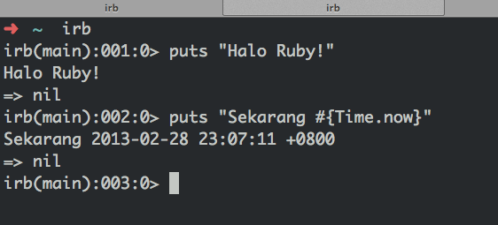

Bagian 2: Coba-Coba Sendiri
Ruby bahasa yang menarik bukan? Apakah kamu sudah mulai tertarik? Bagaimana kalau kamu coba instalasi Ruby dan coba-coba sendiri di komputermu?
Install Ruby
Jika kamu menggunakan sistem operasi Windows, Linux, atau Mac, cara install paling mudah adalah dengan menggunakan Rails Installer. Akan tetapi, installer tersebut menginstal Ruby dan Rails, juga membutuhkan bandwidth cukup kuat.
Berikut ini beberapa cara lain untuk instal Ruby pada Windows, Linux, dan Mac.
Windows
Kamu bisa download dan gunakan RubyInstaller.
Linux
Biasanya, package manager pada distro yang kamu pakai menyediakan Ruby. Jika kamu pakai Ubuntu, jalankan Terminal dan perintah berikut.
apt-get install ruby
MacOS
Biasanya Mac sudah punya Ruby sendiri. Jika kamu ingin install versi lain dari yang sudah kamu punya, kamu perlu install Homebrew terlebih dahulu. Setelah menginstal brew, jalankan Terminal dan perintah berikut.
brew install ruby
Menggunakan Ruby di Terminal
Jika kamu sudah selesai menginstal Ruby, kamu dapat menjalankannya di Terminal. Kamu dapat menggunakan Interactive Ruby Shell (irb) jika kamu ingin coba-coba kode dan langsung lihat hasilnya.
# Ketik irb di Terminal
irb
Setelah itu, kamu dapat mengetik apapun dalam bahasa pemrograman Ruby, termasuk yang sudah kita pelajari pada bab sebelum ini. Sebagai info, berikut contoh penggunaan irb.

Cara lain adalah kamu tulis dulu code Ruby kamu di sebuah file, lalu jalankan filenya. Caranya seperti di bawah.
# Isi file halo.rb
puts "Hore instalasi Ruby selesai! :D"
# Jalankan halo.rb di Terminal
ruby halo.rb
Jika kamu akan terus membaca bab ini, kamu akan perlu menggunakan kedua teknik di atas untuk menjalankan Ruby.
Mengenal RubyGems: Ruby Dependency Manager
RubyGem, atau singkatnya Gem, merupakan dependency manager untuk Ruby. Ini sangat berguna jika kamu ingin melakukan sesuatu seperti membuat permintaan HTTP dengan mudah. Kamu bisa dengan mudah menginstal dengan membuka Terminal dan menjalankan sebuah command. Berikut ini contoh cara menginstal Gem.
gem install httparty # Install sebuah Gem untuk melakukan permintaan HTTP
gem install yajl-ruby devise # Install 2 Gem, untuk parse JSON dan authentikasi
Gem bisa kamu anggap seperti library, plugin, template, atau apapun yang sudah dibuat komunitas dan kemungkinan dipakai orang banyak. Kamu menggunakan Gem untuk menyelesaikan masalah yang ada pada program yang kamu buat dan masalah tersebut sudah dipecahkan orang lain.
Sebagai informasi, kamu dapat mengujungi dokumentasi HTTParty, Yajl Ruby, dan Devise. Informasi tersebut sebenarnya dapat dicari melalui Google.
Ada banyak gem untuk menyelesaikan satu masalah. Contohnya, jika kamu ingin membuat aplikasi web, kamu dapat menggunakan Gem Rails, Sinatra, Padrino, dan banyak pilihan. Pilih saja yang kamu suka, dan pastikan kamu mengerti kelebihan dan kekurangan masing-masing Gem sebelum menggunakannya. Kalau sulit menentukan pilihan, pilih yang populer dan cukup aktif diupdate. Kalau kamu masih bingung dan penasaran pilih Gem, baca saja source codenya. Gem biasanya open source dan dihost di GitHub.
Untuk mengetahui Gem apa saja yang bagus, berikut ini beberapa situs yang dapat kamu kunjungi.
- RubyGems: Tempat hosting Gem.
- Ruby Toolbox: Listing Gem dengan kategori dan statistik masing-masing. Bisa digunakan untuk membandingkan opsi Gem yang ingin kamu gunakan.
- Ruby5: Podcast mengenai Ruby dan Rails.
- The ChangeLog: Beberapa informasi open source terbaru.
- RailsCasts: Screencast mengenari Ruby dan Rails.
Coba di Terminal
Berikut ini beberapa latihan untuk kamu coba-coba di Terminal. Kamu bisa menggunakan irb, atau buat file Ruby kemudian run di Terminal.
Tulis/Baca File (Bahasa Elit: File I/O)
Tujuan dari bab ini adalah untuk mengenal dokumentasi Ruby.
# Tulis File
File.open('coba-coba.txt', 'w') do |file|
file.write("halo ruby!")
file.write(" hmmmmm\n")
end
# Baca File
isi_file = File.open('coba-coba.txt', 'r')
puts isi_file
Coba Sendiri: Ada banyak mode untuk membuka file. Coba append sebuah kalimat ke file "coba-coba.txt". Coba juga gabungkan isi 2 text file.
Lihat dokumentasi File dan TempFile untuk lebih lanjutnya.
Waktu dan Tanggal
Ruby memiliki 1 class (Date) untuk merepresentasikan tanggal dan 2 class (Time dan DateTime) untuk waktu dan tanggal.
Time dan DateTime terlihat seperti kembaran, tetapi mereka sebenarnya berbeda. Time adalah wrapper untuk Unix-Epoch. Date dan DateTime menggunakan bilangan rasional dan "hari ke nol" untuk menyimpan data. Jadi, performance Time lebih cepat, namun batas atas dan bawah terikat pada waktu epoch (1970-2040 untuk integer 32 bit). Sementara, Date dan DateTime memiliki kisaran hampir tak terbatas, tetapi performancenya lebih lambat. Sebagai info, Ruby on Rails menggunakan DateTime supaya bisa me-wrap standar SQL DATETIME.
Date
require 'date'
puts Date.new(2010,2,3)
puts Date.parse('2010-02-03')
puts Date.strptime('03-02-2010', '%d-%m-%Y')
puts Time.new(2010,2,3).to_date
Time
puts "Time"
t = Time.now
puts t.to_i # berdasarkan Unix-Epoch
puts t.mday
puts t.day
puts t.hour
puts t.min
puts t.mon
puts t.month
puts t.strftime("Sekarang tanggal %m/%d/%Y")
puts t.getgm
puts t.getutc
puts t.getlocal; puts
puts Time.at(0)
puts Time.at(Time.at(0))
puts Time.utc(2000,"jan",1,20,15,1)
puts Time.gm(2000,"jan",1,20,15,1)
puts Time.local(2000,"jan",1,20,15,1)
puts Time.new(2012,11,1,15,25,0, "+07:00")
puts Time.new(2012,11,6,17,10,0, "+08:00")
puts Time.new(2012,11,1,13,25,0, "-05:00")
puts "Aritmatika"
t = Time.now
puts t + (60 * 60 * 24)
t2 = t + 2592000
puts t2
puts t2 - t
puts t2 - 2592000
DateTime
puts DateTime.now
puts DateTime.new(2001,2,3)
puts DateTime.new(2001,2,3,4,5,6,'+7')
puts DateTime.new(2001,-11,-26,-20,-55,-54,'+7')
puts DateTime.strptime('2001-02-03T04:05:06+07:00', '%Y-%m-%dT%H:%M:%S%z')
puts
puts DateTime.parse('2001-02-03T04:05:06+07:00')
puts DateTime.parse('20010203T040506+0700')
puts DateTime.parse('3rd Feb 2001 04:05:06 PM')
puts
puts DateTime.httpdate('Sat, 03 Feb 2001 04:05:06 GMT')
puts DateTime.iso8601('2001-02-03T04:05:06+07:00')
puts DateTime.iso8601('20010203T040506+0700')
puts DateTime.iso8601('2001-W05-6T04:05:06+07:00')
puts DateTime.rfc3339('2001-02-03T04:05:06+07:00')
puts DateTime.rfc2822('Sat, 3 Feb 2001 04:05:06 +0700')
puts DateTime.xmlschema('2001-02-03T04:05:06+07:00')
Membuat Permintaan HTTP dan Memparse Respons HTTP
Berguna untuk interaksi dengan API seperti Facebook, Twitter...
# Instal Gem HTTParty
gem install httparty
Mari kita coba melakukan permintaan HTTP ke Google.
# Pakai HTTParty
require 'httparty'
response = HTTParty.get('http://www.google.com')
puts "\nResponse body\n======"
puts response.body
puts "\nResponse status code\n======"
puts response.code
puts "\nResponse headers\n======"
puts response.headers.inspect
puts "\nResponse message\n======"
puts response.message
Sekarang, mari kita coba melakukan permintaan HTTP ke Facebook API. Sebelumnya, kunjungi Facebook Graph Explorer untuk mendapatkan access tokenmu.
require 'httparty'
require 'json' # untuk parse format JSON
require 'pp' # untuk pretty_inspect
access_token = 'paste access tokenmu di sini'
response = HTTParty.get("https://graph.facebook.com/me/friends?fields=id,name,username&access_token=#{access_token}")
puts response.body
puts JSON.parse(response.body).pretty_inspect
Seru bukan? Sekarang coba buat permintaan HTTP untuk membuat listing foto yang diupload salah satu temanmu. Cek dokumentasi Facebook untuk mencari URL yang dapat memberimu data tersebut.
Membuat Domain-Specific Language
Domain-Specific Language (DSL) sangat berguna untuk mendefinisikan konfigurasi supaya mudah dibaca. Kamu akan menemui banyak DSL pada Gem seperti Rails atau Sinatra. Kunci dari pembuatan DSL adalah Metaprogramming.
class Resep
def self.yang_dibutuhkan(*args)
return @yang_dibutuhkan if args.count == 0
@yang_dibutuhkan = [] unless @yang_dibutuhkan
args.each do |arg|
nama_ivar = :"@#{arg}"
@yang_dibutuhkan << nama_ivar
define_method(:"tambah_#{arg}") do |a|
instance_variable_get(nama_ivar).push(a)
end
end
end
yang_dibutuhkan :langkah, :bahan, :peralatan
def initialize(judul)
@judul = judul
dibutuhkan = self.class.yang_dibutuhkan
(dibutuhkan || []).each do |nama_ivar|
instance_variable_set(nama_ivar, [])
end
=begin
# Sudah diset melalui metaprogramming di atas
@langkah = []
@bahan = []
@peralatan = []
=end
end
=begin
# Sudah didefine melalui metaprogramming di atas
def tambah_langkah(langkah)
@langkah << langkah
end
def tambah_bahan(bahan)
@bahan << bahan
end
def tambah_peralatan(peralatan)
@peralatan << peralatan
end
=end
def deskripsi
<<-EOL
==============================
Resep Membuat #{@judul}
==============================
Bahan-Bahan:
------------------------------
#{listing_bernomor @bahan}
Peralatan:
------------------------------
#{listing_bernomor @peralatan}
Langkah-Langkah:
------------------------------
#{listing_bernomor @langkah}
EOL
end
def self.buat(judul, &blok)
resep = Resep.new judul
resep.instance_eval &blok
resep
end
private
def listing_bernomor(listing)
listing.each_with_index.map do |item, index|
"#{index + 1}. #{item}"
end.join("\n")
end
end
resep = Resep.buat "Ayam Kukus" do
tambah_peralatan "Panci Kukus"
tambah_peralatan "Garpu"
tambah_bahan "Ayam"
tambah_bahan "Bumbu (tidak wajib)"
tambah_langkah "Masukkan ayam ke dalam panci kukus"
tambah_langkah "Masukkan nasi secukupnya"
tambah_langkah "Tunggu sampai ayamnya cukup empuk"
tambah_langkah "Coba sesekali tusuk ayamnya untuk mengecek apakah sudah cukup empuk"
tambah_langkah "Sesudah selesai mengukus ayam, kasih bumbu secukupnya"
end
puts resep.deskripsi
Bagaimana? Mudah bukan? Coba buat method tambah_* supaya bisa menerima argumen berjumlah variabel. Coba juga buat method listing_bernomor dibuat secara dinamis oleh method yang_dibutuhkan.
Sumber-sumber:
- RubyLearning Blog: How do I build DSLs with yield and instance_eval?
- music on intarwebz: Simple Academia DSL in Ruby Tutorial